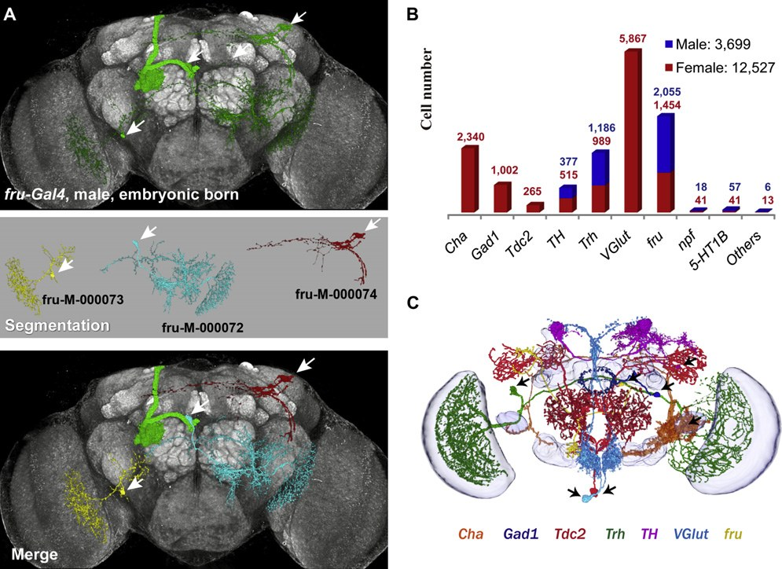
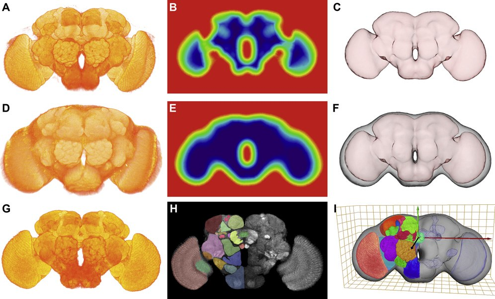
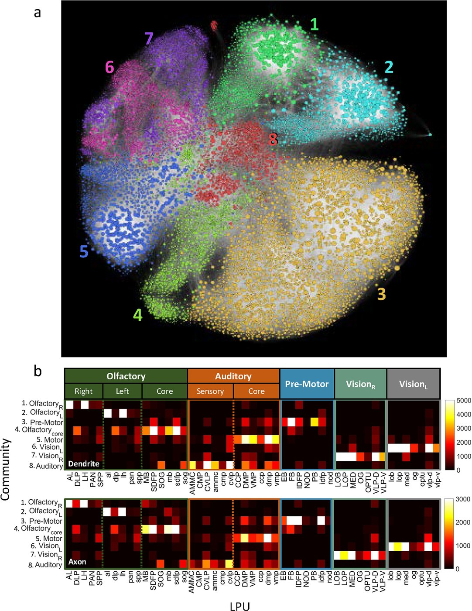

Building a Course out of the Knowledge Base
The knowledge base is built: eleven papers, nine topics. It is not only an encyclopedia you can look things up in — the “topic concepts” already worked out inside it are a ready-made syllabus. This episode takes the first topic, the FlyCircuit database, as the demonstration: how a topic page becomes seven lessons, how an entry becomes lecture notes, what the Agent can generate, and what still has to be your decision.
 Play the tutorial video · 16 min 19 s · watch on YouTube ↗
Play the tutorial video · 16 min 19 s · watch on YouTube ↗
How to read this page
Why Teach from the Knowledge Base
The last three episodes turned a batch of papers into a wiki: entries are the evidence, topic pages are the backbone, the front page is the map. There are two ways to read it. The first is to use it as an encyclopedia — look something up whenever it occurs to you, follow a topic page to an entry and an entry back to a topic page. The second is to use it to teach yourself: a topic page is already a general-audience article about what a subject is doing, in seven sections, with every number linked back to an entry and a list of open questions at the end. Is that not a syllabus?
That is what this episode does. The source material is a single page —
Wiki/topics/flycircuit-database.md — and its seven sections become seven lessons; the
eight entries it cites become the numbers and sources in the lecture notes; its “Open questions”
section becomes the questions to think about at the end; the “three numbers that don't line up” it
records become quiz questions. The Agent lays out the structure, links the numbers back to
their sources, and rewrites the text in the voice of a lecture; what the course teaches, how deep it
goes, and which sentence is the point — those are still yours to decide. At the foot of the
page is a table showing which section of the topic page each lesson came from.
The foundation shared by six papers. This page covers what it is, how it was built, how much is in each version, which part of it each paper used — and three places where the numbers do not line up across papers.
What It Is: A Brain Photographed One Neuron at a Time
FlyCircuit is a public image database of single neurons from the fly brain (at flycircuit.tw). Each record in it is the complete volumetric image of one neuron: genetic techniques make only one (or very few) neurons in a fly brain fluoresce, its three-dimensional shape is imaged, and it is then registered into the coordinate system of a “standard brain”. Repeat that tens of thousands of times and you have an image library of tens of thousands of neurons in one coordinate system.
Why does it deserve a lesson? Because of the first six papers in this knowledge base's “Drosophila connectome” domain, not one fails to depend on it. The 2011 paper built it; the five that follow either use its data for analysis or build tools for it. To understand the relationships among those six papers, you first have to know what this database is, how much data is in each version, and where its quality limits lie.
Each record in it is the complete volumetric image of one neuron: genetic techniques make only one (or very few) neurons in a fly brain fluoresce, its three-dimensional shape is imaged, and it is then registered into a standard-brain coordinate system. Repeat tens of thousands of times and you have a library of tens of thousands of neurons in one coordinate system.

- One record = the 3D image of one neuron, not a photograph — entry 2011-Chiang-FlyCircuit
- The paper that built it: Chiang et al., Current Biology 2011; the standard brain was segmented into 58 morphologically distinguishable neuropils
- Papers that depend on it: 2011, 2015, 2018, 2019, 2021, 2024 — the topic page's
sourcesfield
How It Was Built: Three Techniques and One Bias
Light up one neuron at a time. The MARCM genetic technique makes fluorescent protein express in only a very small number of random neurons. Each fly brain has only one or a few bright neurons and everything else dark, and the bright one is imaged with a confocal microscope. The method is not difficult; the scale is — imaging sixteen thousand neurons means dissecting, staining and imaging thousands of flies.
A standard brain. Sixteen thousand neurons come from sixteen thousand different flies, and every brain differs slightly in size and shape. To put them into one coordinate system, you first need a “standard brain” as the base map. The team did not take the approach of averaging dozens of brains — averaging blurs the image and makes boundaries disappear — but computed the average outer shape from 34 samples and then picked, from the real samples, the one closest to that average to serve as the model. The price is that the standard brain is, in the end, one individual.
Image registration. Each single-neuron image is “pasted” onto the standard brain by a mathematical transformation. This step has error, and the paper measured it: checked with VAM neurons, which every fly has and whose projection path is fairly fixed, whole-brain registration alone puts the terminals in the correct position 69% of the time, rising to 95% if a second, finer registration is done locally. That number is the accuracy ceiling for all the cross-individual analysis that follows.
A bias that is often overlooked. Neurons are labeled by Gal4 drivers — which neurons made it into the database is determined by the drivers used, not by uniform sampling of the whole brain. The 2011 paper did the arithmetic itself: nine drivers together label more than one hundred and fifty thousand neurons, fifty percent more than the estimated total for the whole brain, meaning the drivers do not faithfully reflect endogenous expression. This bias is carried along with the data into every downstream analysis.
The team did not take the approach of averaging dozens of brains (averaging blurs the image and makes boundaries disappear); instead they picked from the real samples the one closest to the average and used it as the model.


- Standard brain: average surfaces computed from 34 samples, then one real brain selected; one female and one male, six days old — 2011 entry, “Methods”
- Registration error: whole-brain 69% (±10%, n=10) → local 95% (±3%); mushroom-body landmark error 3.9 → 1.1 µm — 2011 entry
- Registration method: global affine, 12 degrees of freedom; the local two-step registration is an option, while the whole library gets the global pass first — 2011 entry, “Methods”
- Driver bias: nine drivers together label >150,000 neurons, 50% more than the whole-brain estimate — 2011 entry; the 2015 entry lists thirteen drivers
Three Versions, and How the Data Grew
FlyCircuit was not built once and left alone. The six papers use three different versions, and what separates the versions is more than quantity.
| Version | Year | Single-neuron images | What was added | Source |
|---|---|---|---|---|
| 1.0 | 2011 | about 16,000 | The database itself, the standard brain, 58 neuropils | 2011-Chiang-FlyCircuit |
| 1.1 | 2015 | 23,579 (18,179 female + 5,400 male) | Axon/dendrite polarity annotation for every neuron (the SPIN method), and standard-brain coordinates for every image | 2015-Shih-InfoFlow |
| 1.2 | 2019 | 28,573 (22,834 female) | Quantity | 2019-Shih-CommunityStructure |
The polarity annotation added in 1.1 is the crucial part: once you know which end is input and which is output, you can build a directed network — the precondition for the information-flow analysis of the 2015 paper.
So, are twenty-eight thousand neurons enough? The whole fly brain has roughly one hundred to one hundred and thirty thousand neurons (the papers estimate it differently), and version 1.2 is about a fifth of that. The 2011 paper answered this with a “finite-size analysis”: a random subset of one tenth of the dataset reproduces more than 0.97 of the cross-region connectivity pattern of the full set. That is, for mesoscale brain-region connectivity, the internal redundancy of this dataset is high enough. But note what that argument proves: it compares its own subset against its own full set, so it proves the dataset is internally consistent, not that it is representative of the four fifths that were never sampled.

- 1.0 → 1.1 → 1.2: 16,000 → 23,579 → 28,573; female 18,179 (3,355 LN + 14,824 PN) → 22,834 — 2015 and 2019 entries
- Finite-size analysis: at a subset above 10% of the total the correlation coefficient is > 0.97; a random network does not reach that until 95% — 2011 entry, reading of Fig 6F
- Whole-brain neuron count: the 2011 paper says “one hundred thousand”, the topic page says “about 135,000” — both conventions are in the knowledge base, so state which one you are citing
What Each of the Six Papers Does with It
The relationships of the six papers to FlyCircuit fall into three kinds:
Building it — the 2011 paper. It produced version 1.0 and did the first round of analysis on that data: a mesoscale connectivity map of 41 LPUs, 6 hubs and 58 neural tracts.
Using it for analysis — two papers. The 2015 paper uses the 12,995 projection neurons of the female brain in version 1.1 to build a directed weighted network of 49 nodes (LPU level); the 2019 paper uses the 22,834 female-brain neurons of version 1.2 to build a neuron-level network, with 19,902 nodes after removing the nodes outside the strongly connected component. The two are the same set of graph-theoretic tools run at two scales.
Building tools for it — three papers. In 2018 Kaleido solves “how to look at ten thousand neurons at once”; in 2021 NeuroRetriever automates manual segmentation, running over all 22,037 raw brain images and retrieving 28,125 neurons; in 2024 LYNSU segments not neurons but neuropils, using the other channel of the images, run over all 22,835 female brains. What the three tool papers have in common is that validation is at whole-database scale, not on selected good-looking cases.
There is something easy to confuse hidden here: “raw brain images” and “single-neuron images” are two different numbers. One raw brain image may contain more than one neuron — the 2021 paper retrieved 28,125 neurons from 22,037 raw images, a ratio of about 1.28. So when you say how many records FlyCircuit has, make clear whether you are counting brains or neurons.
| Relationship | Paper | Version and scale used | What it did |
|---|---|---|---|
| Built it | 2011 Chiang | 1.0, about 16,000 | The standard brain, and a connectivity map of 41 LPUs and 58 tracts |
| Analysis | 2015 Shih | 1.1, 12,995 projection neurons | A 49-node directed weighted network, five modules, a rich club |
| 2019 Shih | 1.2, 22,834 → 19,902 nodes | A neuron-level network, eight communities, not small-world | |
| Tools | 2018 Wang (Kaleido) | A random 10,000 | Flattened image layers + Monte Carlo color assignment |
| 2021 Shih (NeuroRetriever) | 22,037 raw images → 28,125 neurons | Automatic segmentation; 65.8% good enough to enter the database directly | |
| 2024 Hsu (LYNSU) | 22,835 female brains | Automatic neuropil segmentation, IoU 0.833 |



Three Numbers That Don't Line Up
This lesson is reading practice. None of the three problems would surface from any single paper; they only become visible when the six are lined up together — which is exactly why the topic page exists.
One. Are there 41 LPUs or 43? The 2011 original says “41 LPUs, 6 hubs”; the 2015 paper, citing it, says “43 LPUs plus 6 interconnecting units”, 49 nodes in total. 41 plus the four pairs of LN-lacking neuropils listed in the 2011 main text (eight) is also 49. The totals match and the classification differs — some units appear to have been reassigned between the two papers, but which two units changed category is not accounted for in either main text. And the 2011 paper is internally inconsistent in one place of its own: the abstract says 6 hubs, while the main text lists four pairs (eight).
Two. Is 28,573 brains or neurons? The 2019 paper says v1.2 “hosts 28,573 images of single neurons”; the 2021 paper says v1.2 is “22,037 raw brain images, 28,573 manually segmented single-neuron images” — the two agree, and 28,573 is neurons. But the 2024 paper writes “hosts images from 28,573 Drosophila brains”, where the unit has become brains. Going by the 2021 data, the number of brain images should be 22,037, and this sentence in 2024 is probably a slip. The “22,835 female brains” analyzed in that same 2024 paper differs by one from 2019's “22,834 female neurons”, and the units differ too; the reasonable conjecture is that they refer to the same batch of data, one counting brains and the other neurons, with one of them counting one item too many or too few — but this is a conjecture.
Three. 28,125 versus 28,573. The automatic segmentation in the 2021 paper retrieved 28,125 neurons, 448 fewer than the 28,573 of the manually segmented library, and the text does not account for where those 448 went.
I have recorded all three of these in the “Open questions and follow-ups” section of each paper's page; they are collected here because they are essentially the same thing: the same database, described with different measurement conventions in different years and different papers. Any future citation of a FlyCircuit count should state the version and the unit.
- 41 vs 43: 41 + 8 = 49 = 43 + 6 — recorded in the “Open questions and follow-ups” of both the 2011 and 2015 entries, each pointing at the other
- The unit of 28,573: 2019 “single neurons”, 2021 “single-neuron images”, 2024 “brains” — the 2024 entry marks this ⚠️ “the third time this knowledge base has hit a cross-paper counting problem”
- The 448: 28,573 − 28,125 — 2021 entry, “Open questions”; status: to be checked
The Limits of the Data
FlyCircuit data have three inherent limitations. They are not flaws of any one paper; they are properties of the optical single-neuron imaging route — remember them before you read these six papers.
Synapses are not visible. The resolution of light microscopy is not enough. So all “connections” are inferred from spatial co-localization — if the fibers of two neurons enter the same region, they are taken to have an opportunity for contact; whether an actual synapse exists, and its direction and number, are unknown. The 2019 paper uses “less than one micrometer apart” as its connection criterion; checked against a batch of neurons that had been anatomically described in detail, it catches only forty percent of the true connections (with a false-positive rate of two percent). This is the premise behind every network conclusion in that paper.
Direction is predicted. The polarity annotation from version 1.1 onward comes from SPIN, a method that judges dendrite and axon from morphology. Its accuracy is not quantified in any of these six papers.
Sampling is biased. The driver problem from Lesson 02.
Taken together, these three points mean that what FlyCircuit gives is a connectivity map that is mesoscale, directed but with predicted directions, and biased in sampling. Within that positioning it does very well; any inference beyond that positioning needs care.
- Connection criterion: axon-to-dendritic-spine-segment distance < 1 µm; validation set of 442 PB-related neurons; TPR 0.40, FPR 0.02 — 2019 entry
- What TPR 0.40 means: a partial map missing six tenths of the true connections, not a wrong map stuffed with false ones — a negative statement (“A and B are not connected”) carries far less evidential weight than a positive one — 2019 entry, “Problems and limitations”
- SPIN accuracy: not quantified in any of the six papers — topic page, “The limits of the data”; listed as the first item under “Open questions” on the network-analysis topic page
Two New Routes: EM and Expansion Microscopy
FlyCircuit cannot see synapses — so what can? Electron-microscopy (EM) connectomes — hemibrain, FlyWire — supplied synapse-level resolution and directionality around 2020. The relationship between the two is complementary: optics gives the whole-brain skeleton and an interface for genetic manipulation, EM gives precise local wiring. This knowledge base already has one analysis using hemibrain (2025 Cheng, the PN→KC connectivity of the mushroom body) — same lab, data switched to EM, question pushed down to the synapse level in a single brain region.
There is also a third route: LICONN, in 2025, uses expansion microscopy to let light microscopy achieve EM-level dense reconstruction, with a molecular readout on top. It is optical like FlyCircuit, but its strategy is the opposite — FlyCircuit sidesteps the resolution problem with sparse labeling, LICONN solves it head-on with expansion. Sparse gives the whole-brain skeleton, dense gives local synapses.


| FlyCircuit (sparse optical) | hemibrain / FlyWire (EM) | LICONN (expansion optical) | |
|---|---|---|---|
| What you see at once | One neuron, whole brain | All neurons, a local volume | All neurons, a local volume |
| A “connection” is | An inference from spatial co-localization | A synapse you can see | A synapse you can see, plus molecular labels |
| Direction | Predicted from morphology (SPIN) | Synapse polarity observed directly | Observed directly |
| Where to start in the knowledge base | This topic | Mushroom-body olfactory connectivity · EM neuron segmentation | Expansion-microscopy connectomics |
What this course teaches
Seven lessons on one database. Not how impressive it is, but what it is, how much is in each version, who does what with it, which numbers don't line up, and where its guarantees stop. Those five questions are worth asking of any database you are going to depend on for a long time.
Three reflexes for reading FlyCircuit papers
- State the version, state the unit16,000 / 23,579 / 28,573 are three versions; 28,573 is neurons, not brains; 22,037 is raw images. When you see a number, ask those two things first.
- Every “connection” has an invisible “putative” in front of itCo-localization is not a synapse, and TPR 0.40 makes it a partial map. Positive statements are credible; negative statements have to be discounted.
- Three premises follow you all the way throughRegistration error 69→95%, the standard brain being one individual, and the drivers deciding who gets into the database — they do not go away just because the downstream papers stop mentioning them.
Questions to think about (from the topic page's “Open questions”)
- The fate of the 448 neurons (28,573 − 28,125) is not accounted for in the text. If you were reviewing the 2021 paper, which table would you ask the authors to add?
- “A one-tenth subset reproduces 0.97” proves internal consistency, not representativeness. Design an experiment that would test representativeness for the neurons that were never sampled — what external data would it need?
- The EM connectome (FlyWire) is public. To use it to validate SPIN's polarity prediction, what would you have to align first?
How this course grew out of the knowledge base
| Lesson | Which section of the topic page | What the Agent did | What the human decided |
|---|---|---|---|
| 00 | The opening quote | Rewrote it as “why teach this at all” | That this episode teaches the idea “a topic page is a syllabus” |
| 01 | What it is | Added a paragraph on why it deserves a lesson | — |
| 02 | How it was built | One paragraph each for the three techniques and the driver bias; every number checked back against the entries | That the registration error is the number to remember in this lesson |
| 03 | Three versions | A table, plus the “is it enough” argument and its limits | That “internally consistent ≠ representative” needs saying separately |
| 04 | How each paper uses it | Split into build / use / tool, plus a comparison table | — |
| 05 | Three numbers that don't line up | Copied almost verbatim, with “If you remember one thing” added | That this is the heart of the course — reading practice |
| 06 | The limits of the data | The three limits plus the positioning sentence; the meaning of TPR 0.40 filled in from the 2019 entry | That the order of the three limits is logical and should be spelled out |
| 07 | The last two paragraphs (EM, LICONN) | Expanded into a three-route comparison table | That a course needs an exit, pointing at other topics |
| Questions to think about | “Open questions” on other topic pages + “Open questions” in the entries | Picked three and rewrote them as questions | — |
| Quiz | The three numbers that don't line up, the limits of the data, the versions | Wrote ten questions | Test judgment, not recall; scatter the position and the length of the correct answers |
The division of labour in one sentence: the Agent lays out the structure, links back to the sources, and rewrites the voice; the human decides what to teach, how deep to go, and which sentence is the point. There are eight more topic pages in the knowledge base, and the same method can be run eight more times.
What this episode produced
| Item | Contents |
|---|---|
| Tutorial web page | This page: seven lessons, questions to think about, and the mapping table |
| Tutorial video | Custom slides plus nine paper figures taken from the knowledge-base entries, each credited; TTS narration |
| Self-check quiz | Ten questions testing judgment about the content of FlyCircuit |
| Knowledge base | Not changed — this episode only reads, never writes; the one new discrepancy found (whole-brain neuron count, 100,000 vs 135,000) is recorded in Lesson 03 on this page |
Figure credits The nine figures on this page are the papers' own figures, taken from the knowledge-base entries that extracted them; each is labeled with its entry and its original figure number. Copyright belongs to the original publishers and authors (Current Biology / Elsevier, Neuroinformatics / Springer Nature, Nature, Science Advances); they are reproduced here for teaching.
Check yourself
Ten multiple-choice questions on the content of FlyCircuit — the conventions behind the numbers, the limits of the data, and how the papers use it. After each answer you immediately see whether you were right, and why.